Research
The central theme of Dr. Koffas' research is metabolic engineering of unicellular organisms with the purpose of efficiently producing high value chemicals, such as nutraceuticals and pharmaceuticals, and proteins of therapeutic importance. Within this context, several different approaches are applied, including 1) development of computational tools to enable the prediction of genetic modifications that would result in increasing the flux in a pathway of interest; 2) protein engineering to allow the functional expression of eukaryotic enzymes in simple microorganisms; and 3) identification of previously unknown metabolic enzymes, with emphasis on enzymes involved in targeted hydroxylations and glycosylations; 4) development of metabolic switches for the dynamic control of metabolic fluxes, based on the concentration of intracellular metabolites.

By modifying a variety of genetic elements we are able to modulate flux through individual nodes or modules in metabolic pathways. Screening for optimum production and decreased intermediate and side-product formation we are able to improve the industrial viability of microbial production platforms.
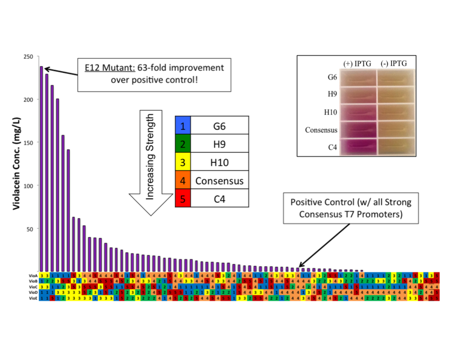
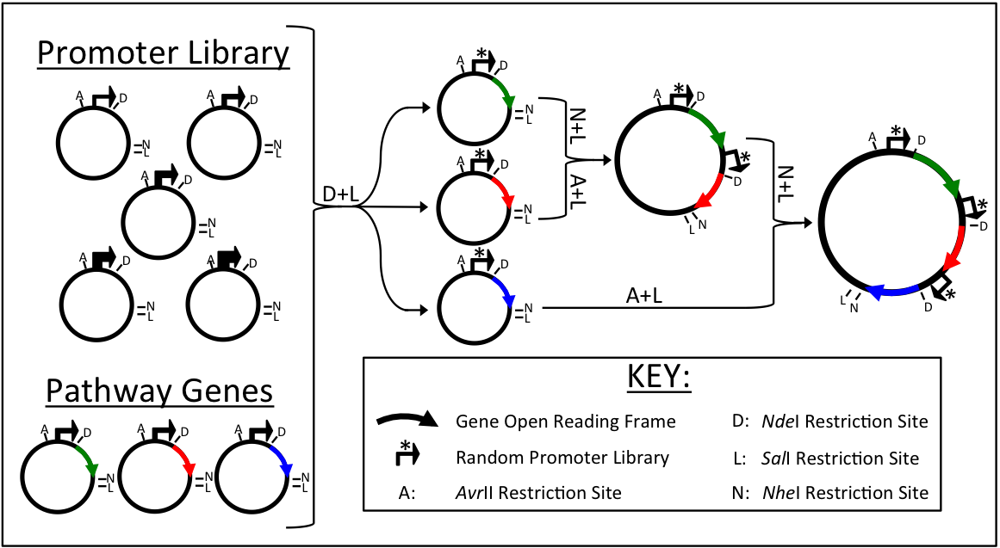
The ePathOptimize system was developed to address the need for cheap and rapid combinatorial assembly of transcriptionally and translationally-varied metabolic pathways. We have applied this approach to a variety of pathways ranging from methanol utilization to flavonoid production with great successes.
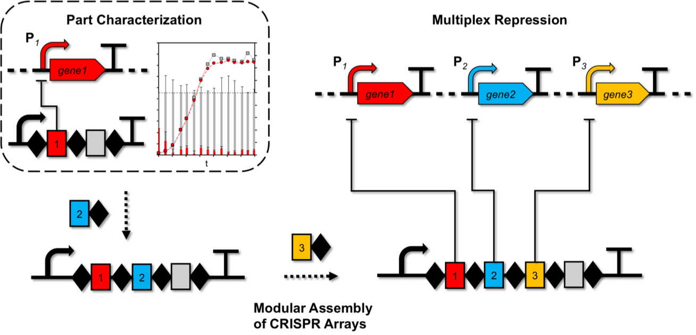
The Koffas group was the first to utilize CRISPR interference (CRISPRi) for metabolic engineering in E. coli. CRISPRi can be used to simultaneously knockdown multiple competing pathways to improve production of a compound of interest, such as the plant natural product naringenin.
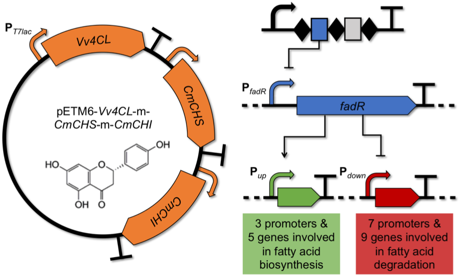
We have constructed a library of T7 promoter variants that are orthogonally regulated through CRISPRi.
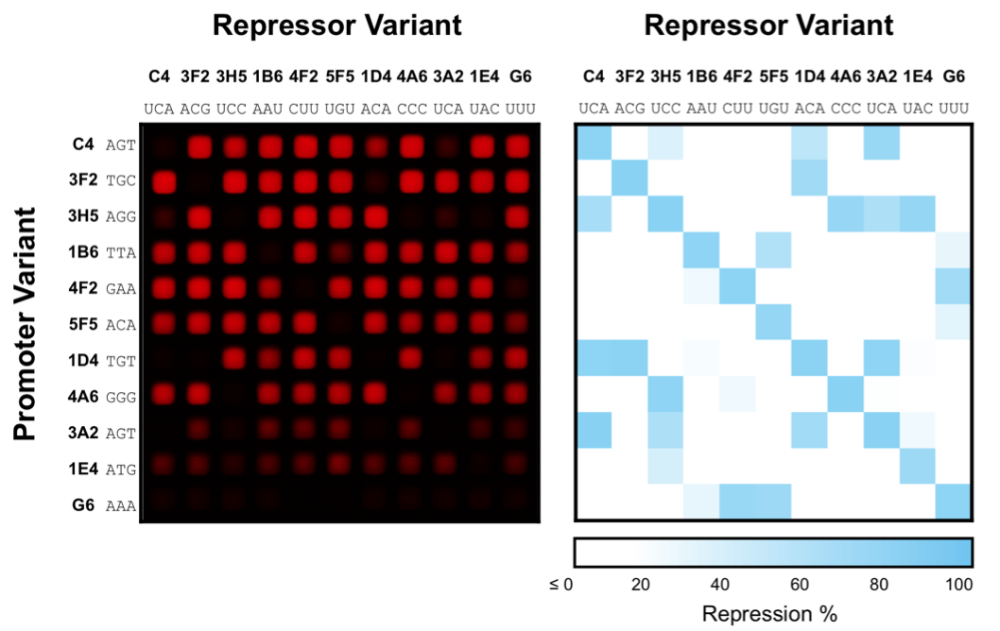
We demonstrated the low crosstalk exhibited by these promoter variants by incorporating them into the highly branched violacein biosynthetic pathway. They act as dCas9-dependent valves capable of throttling and redirecting carbon flux.
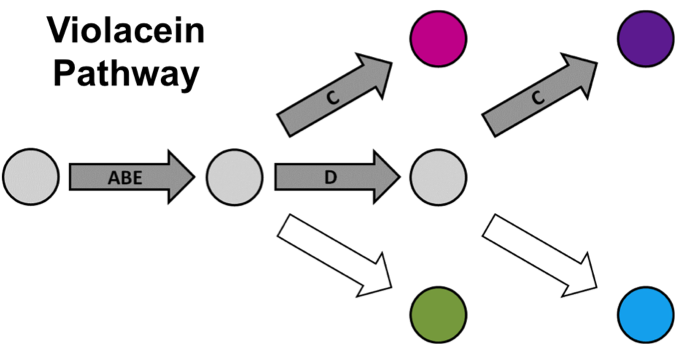
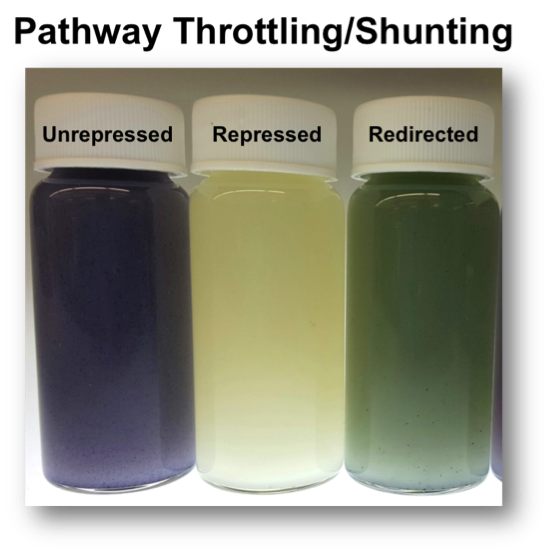
In collaboration with the Linhardt group, we are engineering E. coli for production of pharmaceutically and nutraceutically valuable polysaccharides, particularly the sulfated glycosaminoglycans heparin and chondroitin sulfate.
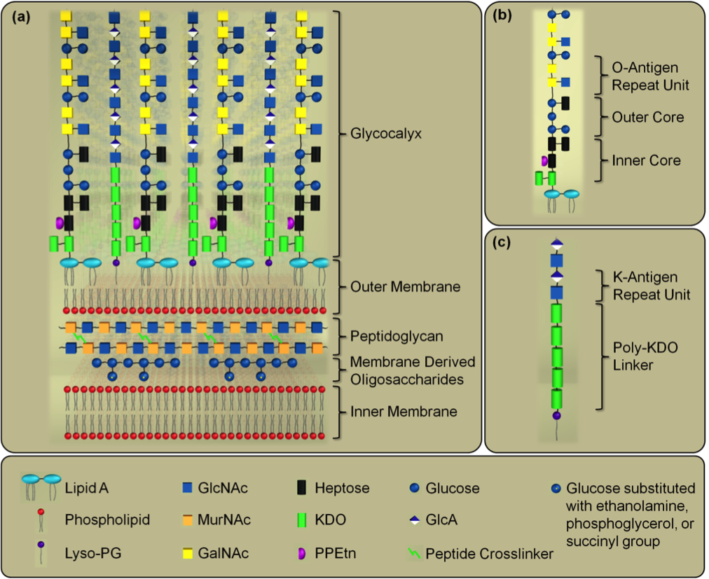
Synthesis begins with nonsulfated capsular polysaccharides naturally produced by microbes, such as heparosan and nonsulfated chondroitin.
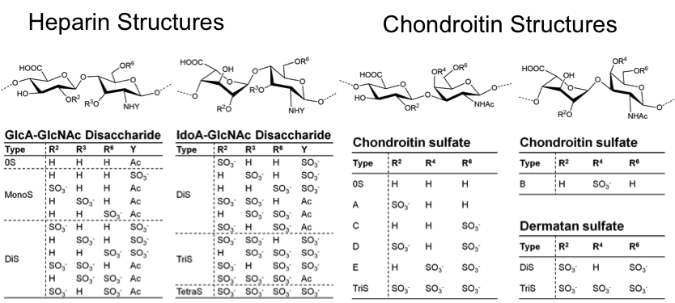
Two major production routes are utilized: In the biotransformation scheme, multiple E. coli strains have been engineered to generate distinct components required for in vitro production of sulfated polysaccharides. We are also engineering the metabolism of individual E. coli strains to produce sulfated polysaccharides in vivo using glucose or glycerol as the sole carbon source.
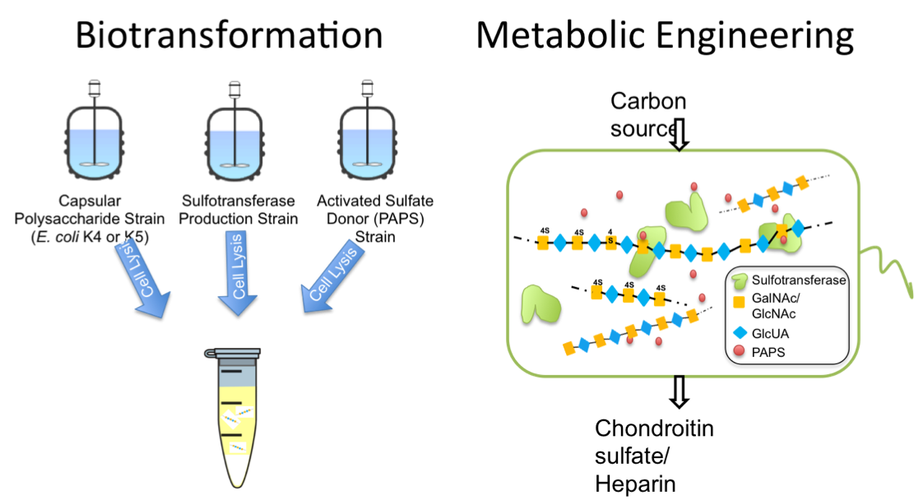
We are currently exploring the use of polycultures (3 or more strains in co-culture) for the production of high-value speciality chemicals in E. coli.
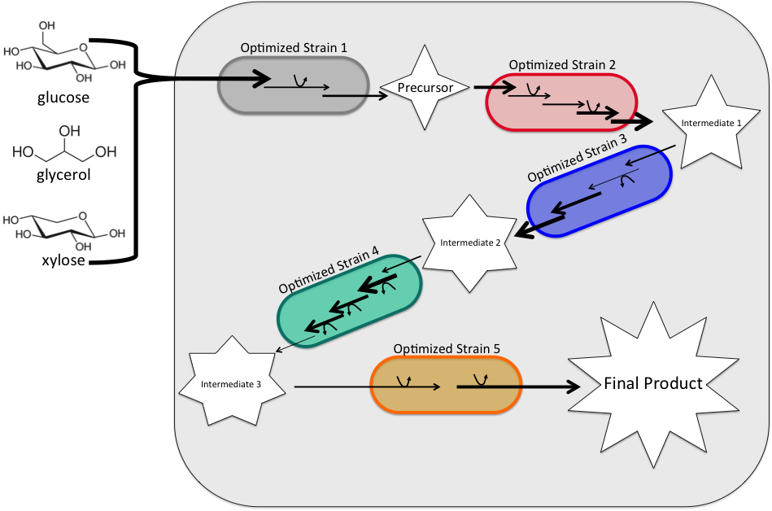
Utilizing a two-strain E. coli co-culture, we were able to demonstrate an approximately 1000-fold improvement in flavan-3-ol titers over previous monoculture efforts.
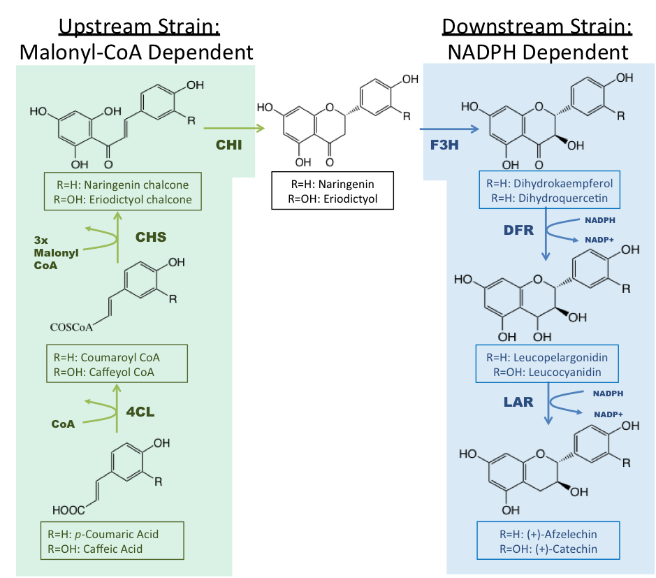
In collaboration with the Collins Lab, we are engineering a microbial community for efficient conversion of cellulosic biomass (waste products) to fatty acids (biofuels).
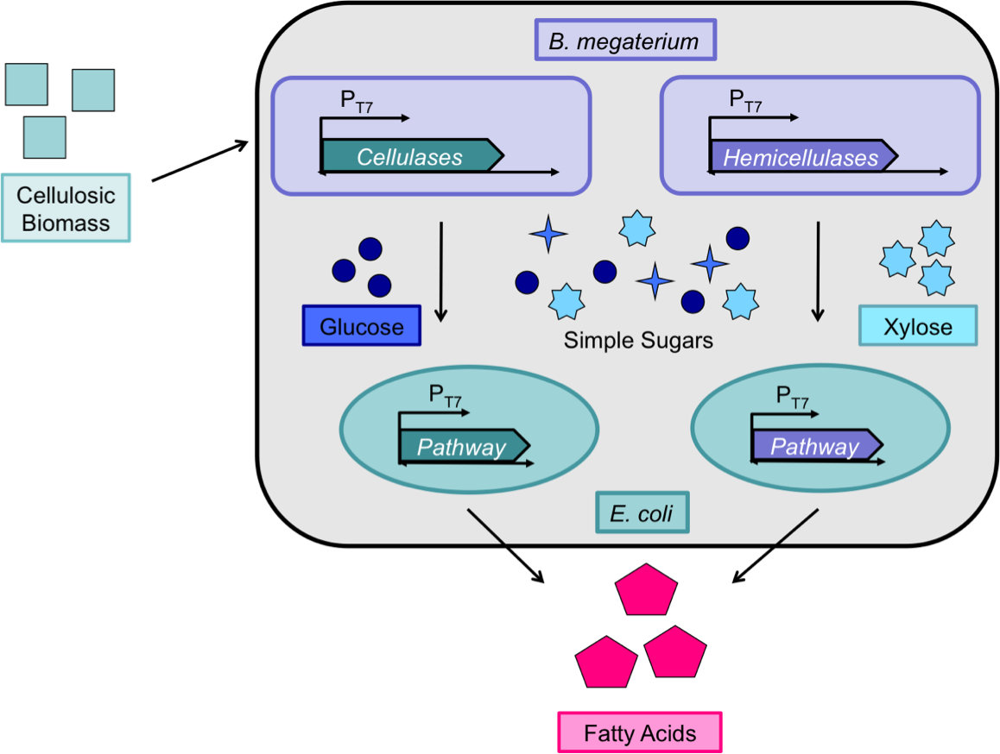
In this system, B. megaterium is being engineered to secrete cellulases & hemicellulases, to degrade the cellulosic biomass to simple sugars such as glucose and xylose.
E. coli strains are being developed to convert the different sugars to biofuels, specifically fatty acids.
Electron mediators, like Neutral Red, facilitate the transfer of reducing equivalents when the input material is not inside the electrolyzer. Electron mediators can transfer reducing equivalents either to the input material for biocatalysis applications, or directly to cells for metabolic engineering applications.
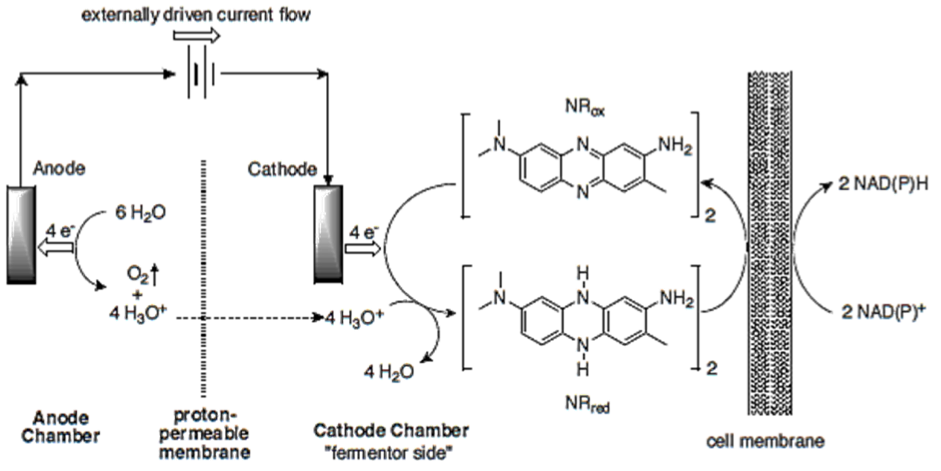

This technology allows for the recycling of expensive cofactors for redox-reactive enzymes, thereby obviating the need to sacrificially oxidize input carbonaceous material in fermentative processes. Applications of this technology include (but are not limited to) biofuels, pharmaceuticals, and value-added products derived from enzymatic or metabolically-engineered processes.
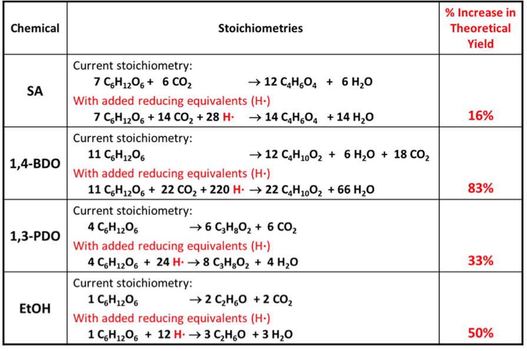
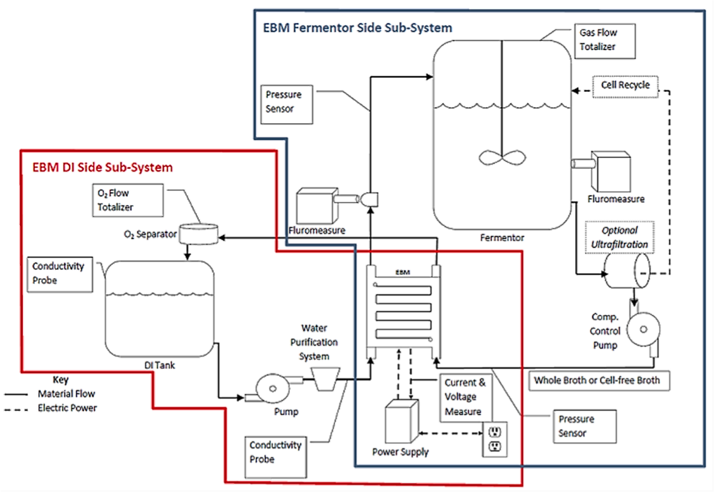
Cathode Subsystem
Reduction Half-Reaction
Fermentor / Material Input
H2 Gas Capture System
UV-Vis Detectors
pH / Conductivity Probes
Anode Subsystem
Oxidation Half-Reaction
O2 Gas Capture System